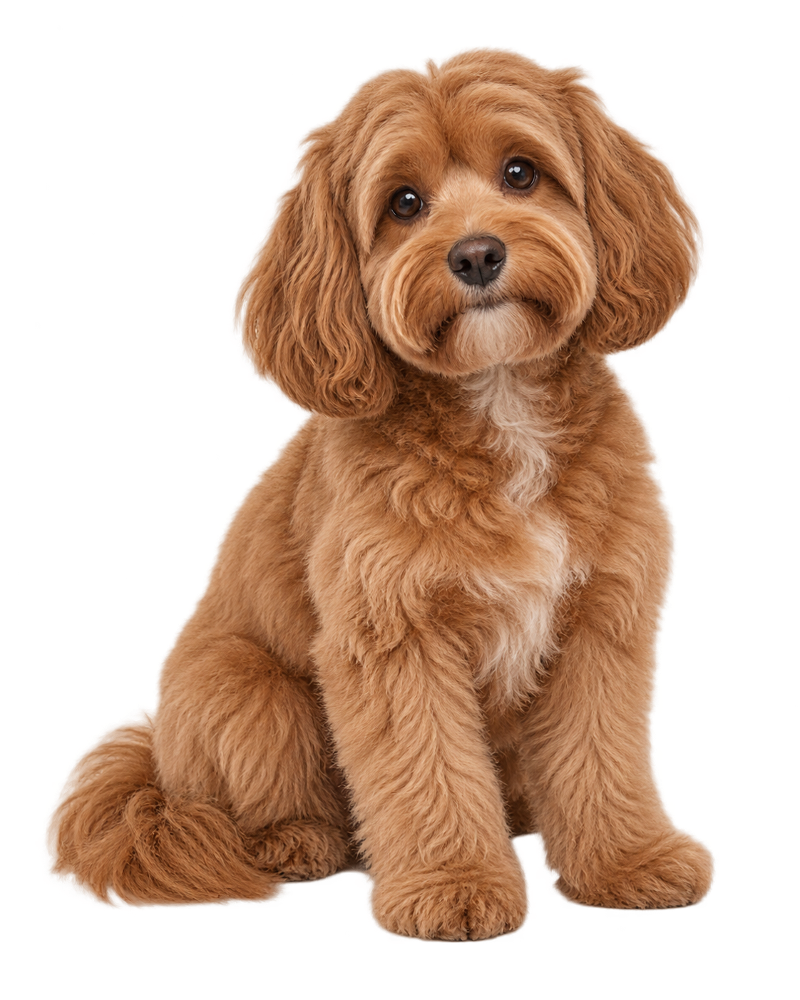

УХОД С УВАЖЕНИЕМ К ХАРАКТЕРУ
Чистые лапы.
Стрижка с умом.
Довольный пёс.
Мытьё, расчёсывание и стрижка в спокойном ритме. Сначала знакомимся с собакой, а потом подбираем то, что подходит именно ей.
У каждого хвоста
свой характер.
Без лишнего.
Всё по делу.
Здесь не нужен длинный список процедур. Начнём с состояния шерсти и того, что комфортно вашей собаке.
01Гигиена и блескКОРОТКАЯ ШЕРСТЬ
Мытьё, сушка, мягкое расчёсывание и аккуратный уход за лапами. Хорошая основа для собаки, которой не нужна стрижка формы.
Посмотреть в подборе02Стрижка и формаДЛИННАЯ ШЕРСТЬ
Подготовка шерсти, мытьё и оформление длины. Перед работой мастер обсудит желаемую форму и состояние шерсти.
Посмотреть в подборе03Кудри под контролемКУДРЯВАЯ ШЕРСТЬ
Бережное распутывание, мытьё и стрижка формы для шерсти, которой нужен особый порядок ухода.
Посмотреть в подбореДва ответа —
и есть ориентир.
Выберите размер и тип шерсти. Покажем примерную программу и время; перед настоящим визитом мастер всё уточнит.
Какой он по размеру?
Какая у него шерсть?
Выберите оба пункта
После выбора здесь появится примерный формат ухода.

«Мне нравится,
когда меня понимают»
Сначала знакомство.
Потом — ножницы.
- 01
Поговорим
Уточним привычки собаки, состояние шерсти и ожидания от ухода.
- 02
Подстроимся
Выберем последовательность процедур и комфортный для питомца темп.
- 03
Подскажем
После визита расскажем, как поддерживать результат дома.
Если собаке некомфортно, реальный мастер должен скорректировать процедуру. Эта страница показывает концепцию сервиса.
Пара важных вопросов
Нужна ли стрижка короткой шерсти?
Обычно хватает гигиенического ухода: мытья, сушки и расчёсывания. Конкретный план зависит от собаки.
Сколько времени займёт уход?
Подбор выше даёт только ориентир. Точное время зависит от размера, состояния шерсти и того, насколько спокойно чувствует себя питомец.
Можно ли сохранить подбор?
Да, он сохранится только в текущей вкладке браузера. Это демо: настоящая запись не создаётся, данные никуда не отправляются.